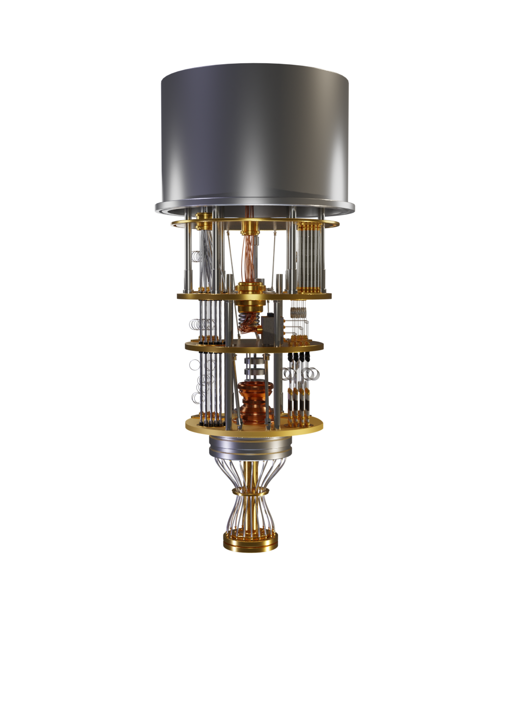

Title: Exploring the Intricacies of Quantum Computing: Unraveling the Mysteries of the Quantum Realm

In the vast landscape of modern technology, where innovation drives progress, one concept stands out as both a promise and a challenge: quantum computing. This enigmatic field, built upon the principles of quantum mechanics, has captured the imagination of scientists, engineers, and enthusiasts alike, offering a glimpse into a realm where computational power transcends the boundaries of classical computing.
At its core, quantum computing harnesses the fundamental properties of quantum mechanics to perform complex calculations at an unprecedented scale. Unlike classical computers, which rely on bits to represent information in binary form (0s and 1s), quantum computers leverage quantum bits, or qubits, which can exist in multiple states simultaneously due to the phenomena of superposition and entanglement.
The key elements to Quantum Computing’s emergence
Within the intricate framework of quantum computing, several key elements converge to enable its remarkable capabilities:
- Qubits: The building blocks of quantum computation, qubits exist in a state of superposition, allowing them to represent both 0 and 1 simultaneously. This duality forms the foundation for parallel processing and exponential increases in computational power.
- Quantum Gates: Analogous to classical logic gates, quantum gates manipulate the state of qubits to perform operations essential for computation. These gates exploit quantum phenomena such as superposition and entanglement to execute complex algorithms with remarkable efficiency.
- Decoherence and Error Correction: Analogous to classical logic gates, quantum gates manipulate the state of qubits to perform operations essential for computation. These gates exploit quantum phenomena such as superposition and entanglement to execute complex algorithms with remarkable efficiency.
- Quantum Supremacy: A milestone in the development of quantum computing, quantum supremacy refers to the demonstration of a quantum computer outperforming the most powerful classical supercomputers in specific tasks. Google's achievement of quantum supremacy in 2019 marked a significant advancement in the field.
- Applications: From cryptography and optimization to drug discovery and materials science, the potential applications of quantum computing span a diverse array of fields. Quantum computers hold the promise of revolutionizing industries and addressing some of the most pressing challenges facing humanity.
- Challenges and Limitations: Despite its immense potential, quantum computing faces numerous challenges and limitations, including the delicate nature of qubits, the need for error correction, and the development of scalable quantum hardware. Overcoming these obstacles remains a primary focus of research and development in the field.
Summary
As researchers continue to push the boundaries of quantum computing, exploring new frontiers and overcoming technical hurdles, the prospect of a quantum-powered future grows ever closer. With each breakthrough comes the realization that we are on the cusp of a transformative era—one where the seemingly impossible becomes achievable, and the mysteries of the quantum realm are brought to light.
In conclusion, quantum computing represents a paradigm shift in computational science—one that holds the potential to redefine the limits of human knowledge and capability. As we delve deeper into the complexities of the quantum universe, we embark on a journey of discovery and innovation, driven by the relentless pursuit of understanding and progress.
„Article” generated by ChatGPT. Prompt: Write an article about anything you want, just make sure it contains a list of elements and some long words